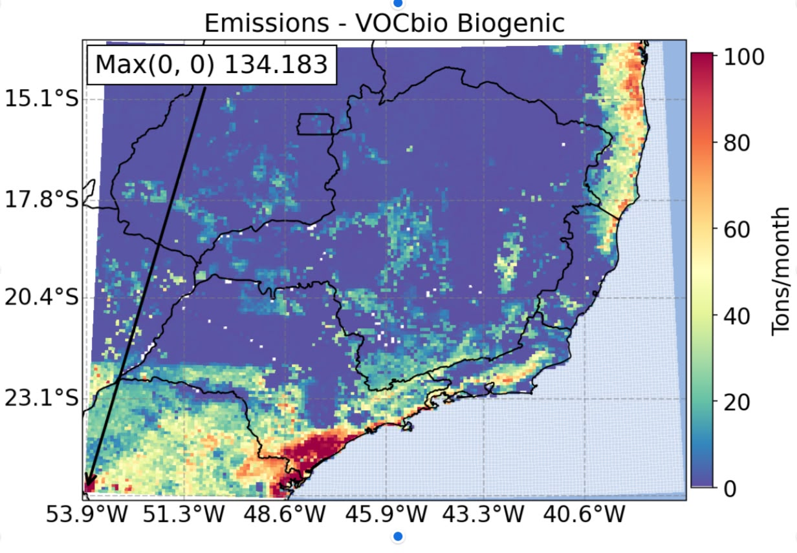
01
Emissões
Processamento de dados ambientais utilizando modelagem computacional, algoritmos inteligentes e análise estatística aplicada.

Transformando dados ambientais em soluções para um futuro mais sustentável.
Instituições
de Pesquisa
Empresas
Privadas
Pesquisadores
Bolsistas
O Projeto O₃ Mover integra análise computacional, monitoramento ambiental e pesquisa científica para compreender impactos atmosféricos e desenvolver soluções sustentáveis.

Processamento de dados ambientais utilizando modelagem computacional, algoritmos inteligentes e análise estatística aplicada.
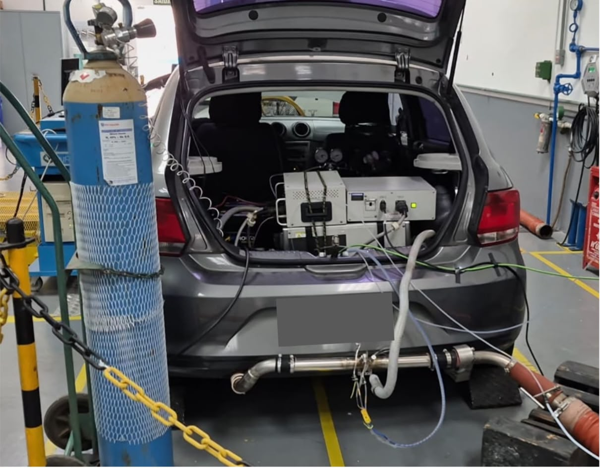
Estudos atmosféricos voltados à qualidade do ar, emissões industriais e sustentabilidade urbana em regiões de interesse científico.
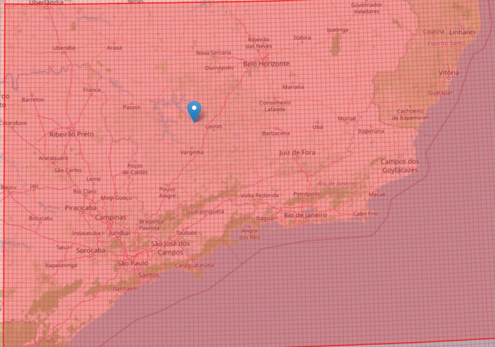
Desenvolvimento de pesquisas e soluções inovadoras para análise ambiental, climática e identificação das regiões monitoradas pelo projeto.
O Projeto O₃ Mover busca integrar ciência, computação e monitoramento ambiental para gerar soluções sustentáveis e análises atmosféricas de alta precisão.
Estudar as emissões da exaustão e evaporação veicular de etanol e gasolina, em laboratório e em condições reais de circulação.
Simular cenários de redução das emissões de diferentes compostos orgânicos para avaliar seus impactos nas concentrações de ozônio troposférico na região.
Avaliar como as emissões de veículos e das etapas de produção, distribuição e abastecimento de gasolina/etanol contribuem para as concentrações de ozônio troposférico.
Divulgar e disseminar os conhecimentos gerados pela pesquisa e contribuir para a formação de recursos humanos na área.
Modelar as concentrações de ozônio troposférico no eixo SP-BH.
O Projeto Ozônio reúne pesquisadores, estudantes e colaboradores de diversas universidades brasileiras voltadas à pesquisa, tecnologia, sustentabilidade e inovação ambiental.
Desenvolvimento científico e tecnológico aplicado ao monitoramento atmosférico e análise ambiental.
Docente titular da UTFPR, bolsista de produtividade em pesquisa do CNPq e coordenadora-geral do Projeto O3 MOVER. Atua na área de química da atmosfera, com ênfase em qualidade do ar, formação de ozônio troposférico e modelagem atmosférica.
.jpeg) PBD1
PBD1
Doutora em Meteorologia pelo IAG-USP, Mestre e Bacharel em Engenharia Ambiental pela UTFPR. Atua no projeto com inventários de emissões, desenvolvimento de softwares, modelagem atmosférica e análise estatística, com foco na relação entre poluição do ar, clima e saúde humana.
Está sendo elaborado o inventário de emissões atmosféricas de fontes fixas do setor de distribuição e abastecimento de combustíveis veiculares a partir de dados públicos e solicitados para ANP e a elaboração de scripts em linguagem de programação python
Desenvolvedor do modelo computacional denominado PEGA, no qual emite um inventário com as informações dos polunete emitidos por industrias de fontes fixas, além do desenvolvimento da página Web para o Projeto O₃ Mover afim da divulgação do Projeto de pesquisa.
Desenvolvimento e aplicação de modelos computacionais voltados à análise ambiental da poluição atmosférica, com processamento, organização e interpretação de dados. Utilização de programação para automatização de processos e apoio à elaboração de estudos e pesquisas científicas.
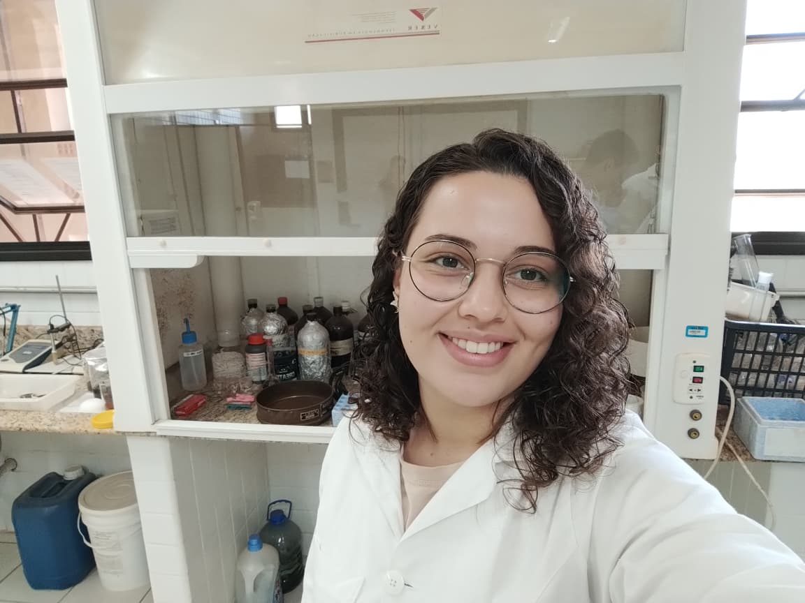
BGPesquisas em análise da qualidade do ar e acompanhamento de índices de poluição atmosférica. Monitoramento das concentrações de ozônio troposférico relacionando-os à dados de ondas de calor e de internações por doenças cardiorrespiratórias, utilizando de softwares e análises estatísticas de perfis históricos, correlação e métodos de regressão
Estou na graduação e atuo no projeto realizando análises químicas, coleta e organização de dados, auxiliando no desenvolvimento do website e na elaboração de orçamentos para aquisição de materiais, equipamentos e insumos necessários às atividades do projeto e do laboratório.
Instituto de Astronomia, Geofísica e Ciências Atmosféricas da Universidade de São Paulo.
Colaboração científica em pesquisa atmosférica e análise de dados ambientais.
Apoio ao desenvolvimento tecnológico e integração de sistemas computacionais.
Pesquisa aplicada à sustentabilidade urbana e monitoramento ambiental.
Engenharia aplicada ao desenvolvimento de tecnologias ambientais.
Colaboração em pesquisa computacional, sustentabilidade e modelagem ambiental.
Atuo no levantamento, organização e análise de dados sobre emissões de poluentes e qualidade do ar, avaliando a relação entre a poluição atmosférica e seus possíveis impactos na saúde da população, por meio de análises estatísticas e ambientais.
Atuo na amostragem e análise de emissões veiculares, realizando coletas, preparo e análise de amostras por técnicas cromatográficas (GC-MS e LC-MS), além do processamento e interpretação dos dados para identificar e quantificar poluentes e avaliar sua relação com a formação de ozônio.
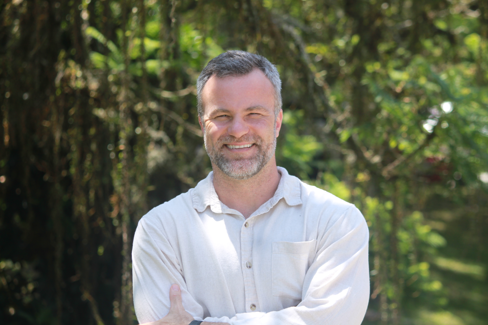
Cordenador AssociadoAtuo na elaboração de inventários de emissões e modelagem da qualidade do ar, realizando o levantamento e análise de dados sobre fontes emissoras e poluentes atmosféricos. Desenvolvo simulações para compreender a dispersão dos poluentes e seus impactos na qualidade do ar, contribuindo para estudos e avaliações ambientais.
Trabalho na programação e desenvolvimento de resultados, criando ferramentas e rotinas computacionais para processar, organizar e analisar dados ambientais. Desenvolve soluções para automatizar análises, gerar gráficos, mapas e outros resultados, contribuindo para a interpretação e apresentação dos dados das pesquisas.
Responsável pela coordenação geral da equipe e das atividades do projeto, incluindo planejamento e acompanhamento dos ensaios, orientação dos bolsistas, supervisão das atividades e elaboração de relatórios, artigos e apresentações dos resultados.
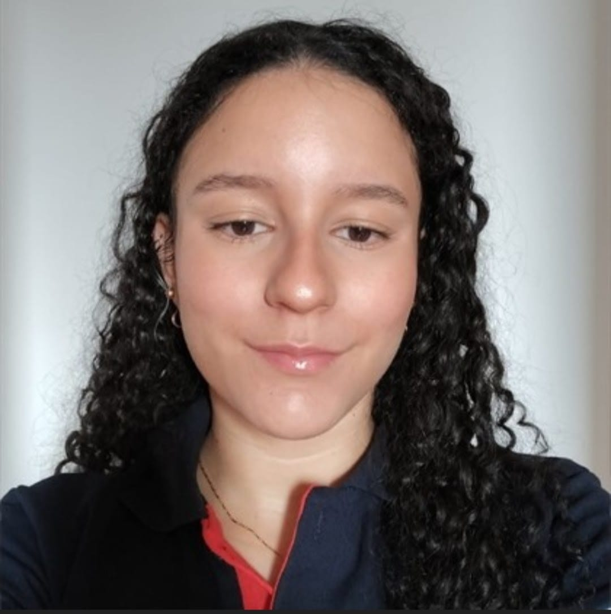
BITOrganizar e tratar os dados de concentração de ozônio e de material particulado monitorados pela rede de qualidade do ar de Minas Gerais no período de 2020 a 2025 para criação de um banco de dados que integre as emissões atmosféricas de variadas fontes, as estações de qualidade do ar localizadas em áreas específicas do Estado e os desfechos de saúde do DATASUS.
Conhecimento sobre os processos de formação e emissão de poluentes de origem veicular, procedimentos e instrumentação aplicados a testes e ensaios em veículos, incluindo coleta e tratamento de dados, avaliação de resultados e análise crítica das emissões veiculares, considerando diferentes condições de operação.
Medição e monitoramento das emissões veiculares em laboratório e em condições reais de tráfego, utilizando procedimentos e instrumentação específicos para coleta, análise e avaliação dos dados obtidos em diferentes condições de operação.
Confira os produtos desenvolvidos no ambito do projeto.
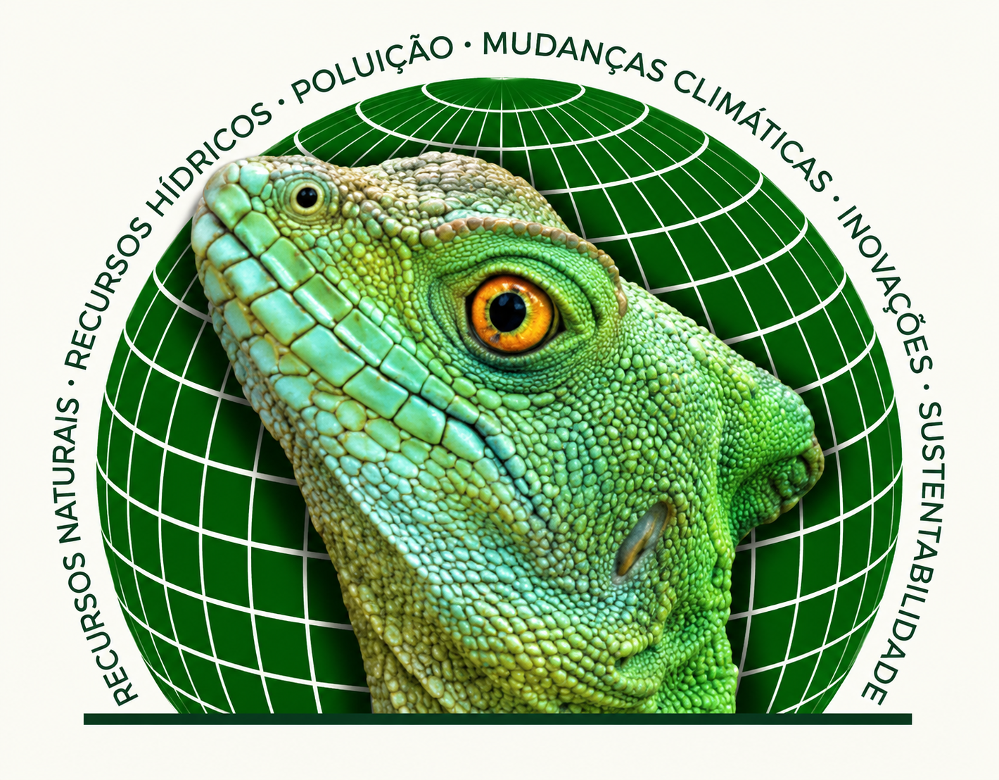
O estudo apontou maior reatividade das emissões veiculares no Brasil em relação aos EUA, validou a consistência dos perfis químicos do modelo VEIN e recomendou novos estudos sobre a especiação das emissões veiculares brasileiras.
O estudo apresenta um inventário de emissões veiculares no Brasil (1960–2100), utilizando o modelo VEIN, e identifica discrepâncias em inventários globais. Destaca que o aumento da temperatura intensifica as emissões evaporativas de NMHC, cuja oxidação em CO₂ contribui para um mecanismo de retroalimentação positiva.
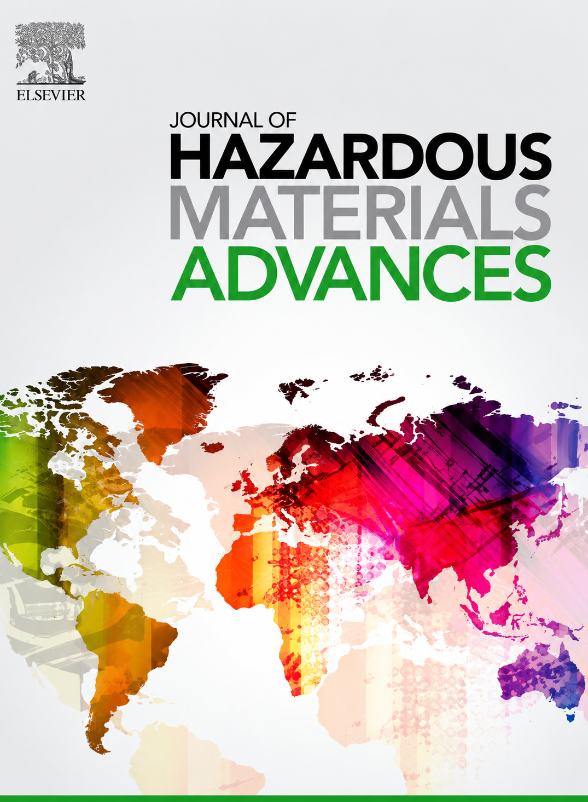
A revisão aborda os mecanismos de formação do ozônio troposférico, destacando as interações NOx-COVs, emissões veiculares e condições urbanas. Identifica lacunas na formação secundária de COVs, nas medições de emissões, na estimativa de compostos voláteis intermediários e na relação entre ozônio e aerossóis orgânicos secundários (SOA).

O estudo analisa as fontes de precursores de ozônio em São Paulo, destacando a influência dos NOx e COVs na formação de O₃. Identifica efeitos distintos conforme a fonte emissora, especialmente em regiões industriais como Paulínia, e reforça a importância das emissões locais e regionais no controle da poluição atmosférica.

O estudo analisa eventos de ondas de calor e ozônio troposférico em São Paulo, identificando aumento das concentrações de O₃ em 62% dos locais e da temperatura máxima em 90%. Os resultados destacam excedências aos limites da OMS e a necessidade de estratégias de mitigação da poluição atmosférica e das ondas de calor.
O trabalho apresenta um inventário de emissões de fontes industriais. O produto, cujo os dados estão disponíveis em (GitHub - Martins-UTFPR/Brazil-industrial-emissions-inventory_v2: Industrial atmospheric emission inventory – Brazil), será utilizado nos estudos e nas simulações a serem realizadas.
Divulgação das atividades e estudos desenvolvidos pelo projeto.
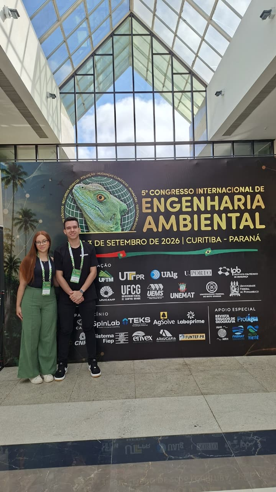
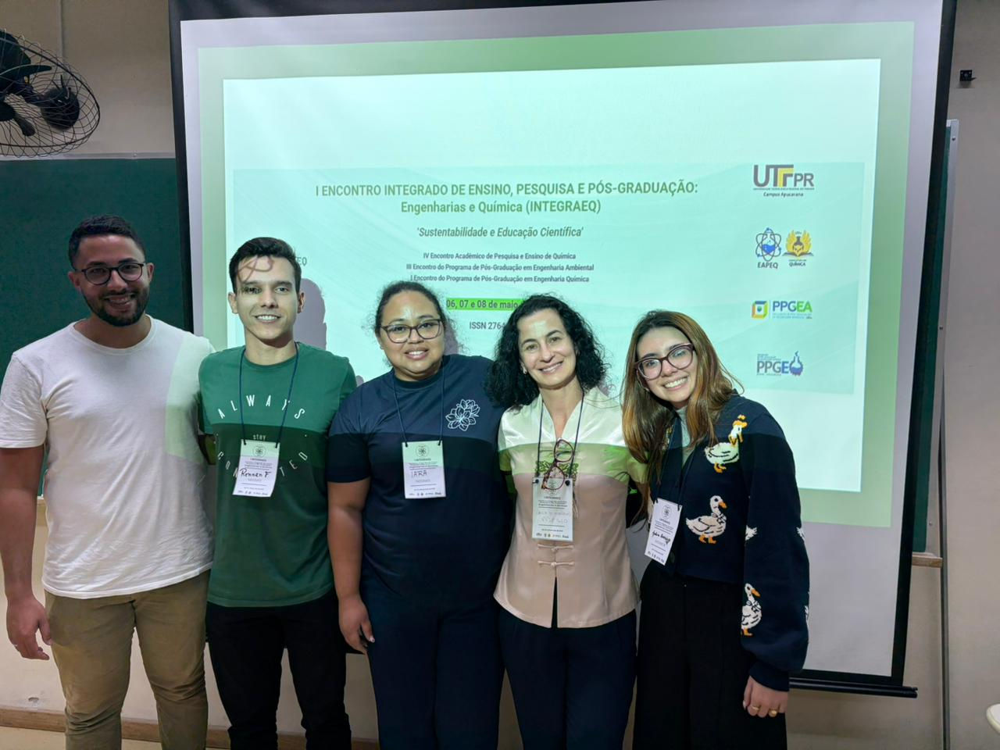
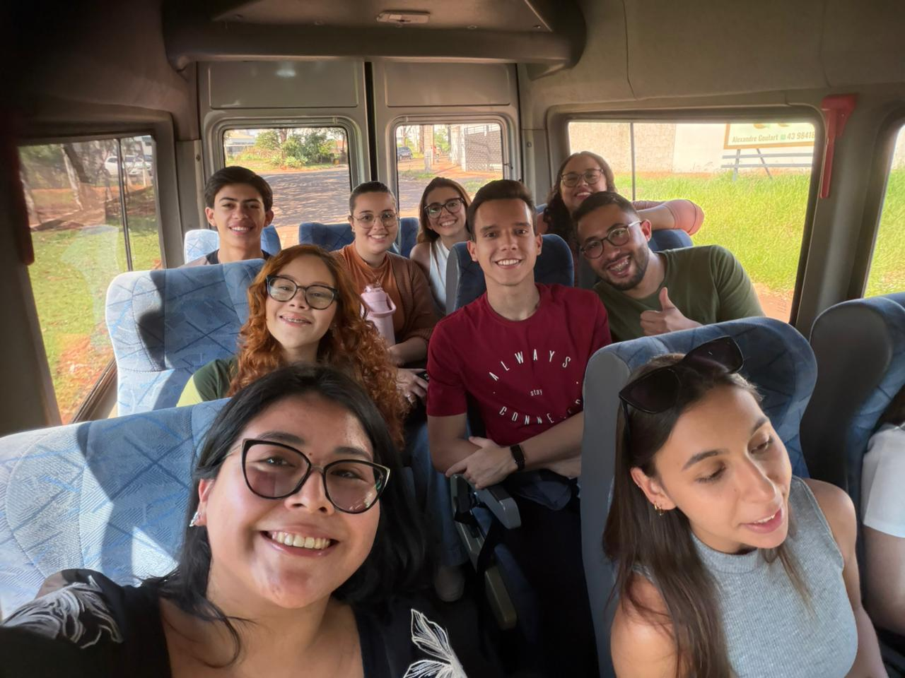
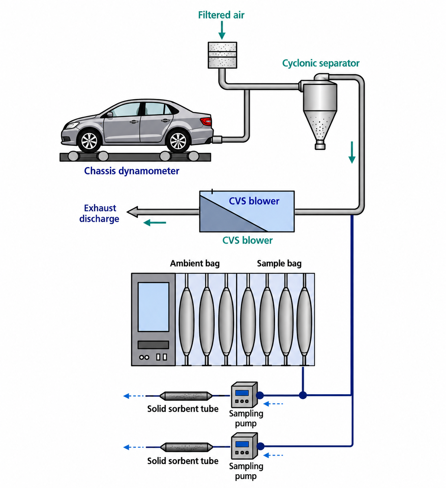
O Projeto O₃ Mover conta com apoio científico, tecnológico e institucional de universidades, empresas automotivas, centros de pesquisa e organizações voltadas à inovação ambiental.